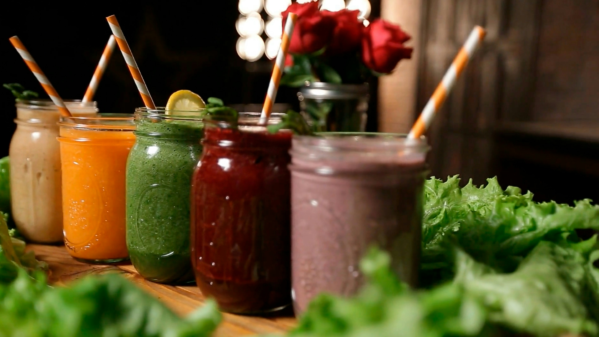

Smoothies

Description
From classic strawberry-banana to exotic mango-acai, there's a flavor for everyone. Dive in and enjoy the refreshing world of smoothies that make healthy living simple and enjoyable!
Ingredients
- ½ cup kefir
- ½ cup cold brewed tea
- 1 cup frozen banana slices
- 1 cup frozen sliced strawberries
- 1 teaspoon matcha powder
Steps
- Blend all ingredients in a blender until smooth, stopping to scrape down sides as needed, 2 to 3 minutes. Serve.
-
You can use 1 cup of any frozen chopped or sliced fruit, any flavored kefir, and 1 to 2 teaspoon of any powder addition you like. You can use chilled brewed coffee instead of tea.
Home